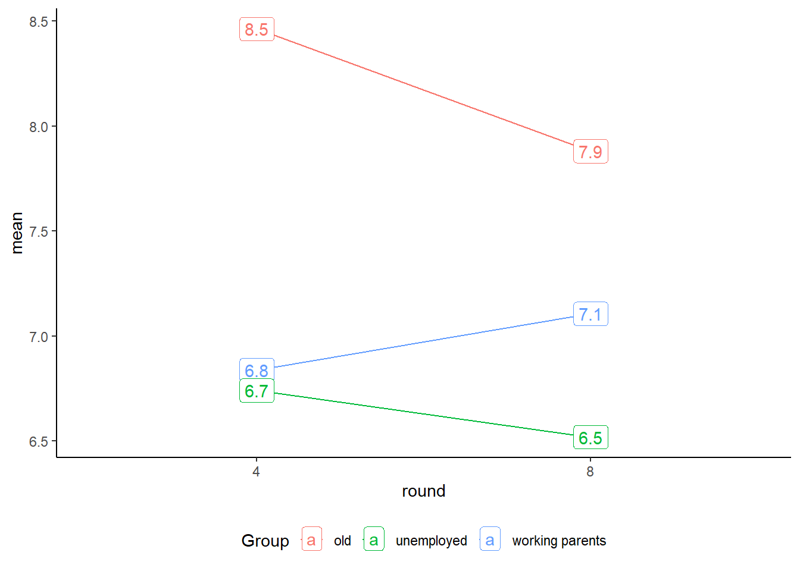

library(tidyverse)library(haven)library(gt)library(gtsummary)library(plotly)# Function to get the name of the latest fileget_latest <-function(file_pattern){ file_list <-list.files(path ="./data", pattern = file_pattern) latest_file <-tail(sort(file_list), n =1)return(latest_file)}# Read file in the root of sub-folder "data" with name containing "ESS" df_ess <-read_dta(paste0("data/", get_latest("ESS")))
The data analysed in this chapter refers to a special module from the European Social Survey on welfare attitudes that was fielded in 2008 (Round 4) and repeated in 2016 (Round 8) (see Meuleman et al. (2018) for more on this module).
3.1 Large differences acceptable
In this question, respondents were asked to what extent they agree with the following statement:
Question wording
‘Large differences in people’s incomes are acceptable to properly reward differences in talents and efforts’
The distribution appears to be similar for 2008 and 2016, with a slight reduction in the proportion of those who “agree” or “agree strongly”.
Figure 3.1: Distribution of ‘Large differences acceptable’ (2008 and 2016)
A multivariate analysis with the same explanatory variables from the model in Table 2.2 suggests that gender and class are not statistically significant predictors. However, respondents with worse financial situation tend to disagree more with this statement.
3.2 Deservingness
In this question, respondents were asked how much responsibility the government should have in relation to the following groups:
Question wording
People have different views on what the responsibilities of governments should or should not be. For each of the tasks I read out please tell me on a score of 0-10 how much responsibility you think governments should have. 0 means it should not be governments’ responsibility at all and 10 means it should be entirely governments’ responsibility
“… ensure sufficient child care services for working parents”
“… ensure a reasonable standard of living for the old”
“…ensure a reasonable standard of living for the unemployed”
In the Figure 3.2, higher values denote higher government responsibility. On average respondents believe that the government should be more responsible for the old compared to working parents and unemployed. However, there was a reduction in this prioritisation for governments’ responsibility in relation to older citizens and unemployed and increase in the average prioritisation for working parents.
Figure 3.2: Mean values for deservingness of government support by group and round

3.3 Beliefs about social benefits
The module also included questions in relation to beliefs about the consequences of social benefits and services:
Question wording
Using this card please tell me to what extent you agree or disagree that social benefits and services in [country]…
“…lead to a more equal society?”
“… make people lazy?”
“…make people less willing care for one another?”
“…prevent widespread poverty”
“…place too great strain on economy”
The average level of agreement remains similar comparing 2008 and 2016. The only exception is the average for “social benefits place too great strain on economy”, which oberved a significant reduction in the level of agreement, as shown in Figure 3.3.
Code
believe_vars <-c("sbeqsoc", "sblazy", "sblwcoa", "sbprvpv", "sbstrec")df_ess <- df_ess |>mutate(across(all_of(believe_vars), ~6- .x, .names ="{.col}_inv"))believe_vars_inv <-c("sbeqsoc_inv", "sblazy_inv", "sblwcoa_inv", "sbprvpv_inv", "sbstrec_inv")(df_ess |>filter(essround %in%c(4, 8)) |>group_by(round =as_factor(essround)) |>summarise(across(all_of(believe_vars_inv), ~weighted.mean(.x, w = pspwght, na.rm = T))) |>pivot_longer(cols =-round, names_to ="Question", values_to ="mean") |>mutate(Question =case_match( Question, "sbeqsoc_inv"~"Lead to equal society", "sblazy_inv"~"Make people lazy", "sblwcoa_inv"~"Make people less willing to care","sbstrec_inv"~"Put strain on economy","sbprvpv_inv"~"Prevent poverty" )) |>ggplot(aes(x = round, y = mean, group = Question, color = Question)) +geom_point() +geom_line() +# geom_label(aes(label = round(mean, 1)))+theme_classic()) |>ggplotly()
Figure 3.3: Mean values for beliefs in relation to social benefits by round
PCA
A Principal Components Analysis indicate that these five variables can be reduced to the following two latent dimensions named arbitrarily:
Protective (PC1): “Lead to equal society” and “Prevent poverty”;
Disincentive (PC2): “Make people lazy” and “Make people less willing to care”, and “Put strain on economy”.
The variables were aggregated within each dimension using the mean value of the non-missing answers. The Table 3.1 below shows the coefficients of two OLS explanatory models for these two dimensions.
The first model indicates that female respondents tend to provide a slightly lower score on the protective dimension of beliefs about social benefits. None of the other predictors included in the model are statistically significant.
The second model suggests that the group of “small business owners” and “skilled workers” have higher scores compared to respondents of other social classes. In addition, respondents with worse self-reported financial situation tend to disagree more with beliefs related to disincentive dimension of social beliefs.
Code
vars_protect <-c("sbeqsoc_inv", "sbprvpv_inv")vars_disinctv <-c("sblazy_inv", "sblwcoa_inv", "sbstrec_inv")df_ess$protective <-rowMeans(select(df_ess, all_of(vars_protect)), na.rm = T)df_ess$disincentive <-rowMeans(select(df_ess, all_of(vars_disinctv)), na.rm = T)model_belief <-function(DV){ model <-as.formula(paste0(DV, "~ factor(essround) + agea + as_factor(gndr) + as_factor(class5) + as_factor(hincfel)"))lm(model, weights = pspwght, data = df_ess) |>tbl_regression(include =c("agea", "as_factor(gndr)", "as_factor(class5)", "as_factor(hincfel)")) |>bold_p(t =0.05, q =FALSE) }tbl_merge(tbls =map(c("protective", "disincentive"), model_belief),tab_spanner =c("**Protective**", "**Disincentive**")) |>as_gt() |> gt::tab_source_note("Time fixed effects (ESS Round) omitted from the table but included in the model") |>tab_options(table.width =pct(80))
Table 3.1: OLS regression coefficients for ‘beliefs about social benefits’
Characteristic
Protective
Disincentive
Beta
95% CI1
p-value
Beta
95% CI1
p-value
Age of respondent, calculated
0.00
0.00, 0.00
<0.001
0.00
0.00, 0.00
0.9
as_factor(gndr)
Male
—
—
—
—
Female
-0.07
-0.12, -0.03
0.002
0.03
-0.02, 0.08
0.3
Final Oesch class position - 5 classes
Higher-grade service class
—
—
—
—
Lower-grade service class
-0.03
-0.12, 0.05
0.4
0.09
0.00, 0.17
0.051
Small business owners
-0.05
-0.14, 0.04
0.3
0.12
0.03, 0.21
0.009
Skilled workers
-0.01
-0.08, 0.07
0.9
0.09
0.01, 0.16
0.023
Unskilled workers
0.00
-0.07, 0.08
>0.9
0.08
0.00, 0.16
0.056
as_factor(hincfel)
Living comfortably on present income
—
—
—
—
Coping on present income
-0.03
-0.08, 0.02
0.3
-0.03
-0.08, 0.03
0.3
Difficult on present income
-0.07
-0.15, 0.00
0.067
-0.22
-0.30, -0.14
<0.001
Very difficult on present income
-0.06
-0.18, 0.05
0.3
-0.48
-0.61, -0.36
<0.001
Refusal
-0.20
-1.3, 0.87
0.7
-0.46
-1.6, 0.65
0.4
Don't know
0.84
0.39, 1.3
<0.001
-0.53
-1.0, -0.05
0.029
Time fixed effects (ESS Round) omitted from the table but included in the model
1CI = Confidence Interval
Meuleman, Bart, Wim Van Oorschot, Dimitri Gugushvili, Sharon Baute, Sam Delespaul, Tijs Laenen, Femke Roosma, and Federica Rossetti. 2018. “The Past, Present and Future of European Welfare Attitudes: Topline Results from Round 8 of the EuropeanSocialSurvey.”ESS Topline Series.